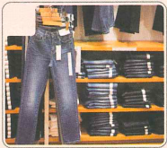
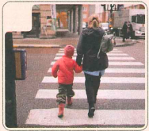
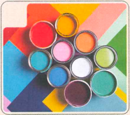
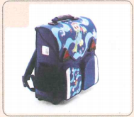
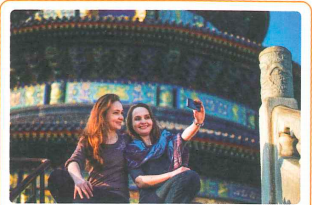
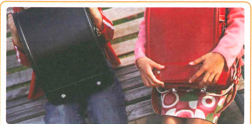
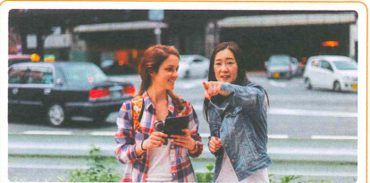

你穿红色的很好看
Con mặc đồ màu đỏ rất đẹp
HSK 2 · Bài 4
🔥 Khởi động 1 · Chọn đáp án đúng cho từng hình
给下面的词语选择对应的图片。Mỗi hình có 4 đáp án A–D.




✍️ Khởi động 2 · Trải nghiệm đã từng có
读一读下列词语，圈出自己曾经有过的经历。Đọc và chọn trải nghiệm của bản thân.
| Động từ | Lựa chọn 1 | Lựa chọn 2 | Lựa chọn 3 |
|---|---|---|---|
| 吃 | 包子 | 饺子 | 面条儿 |
| 喝 | 绿茶 | 红茶 | 花茶 |
| 去 | 中国 | 法国 | 泰国 |
📚 Từ vựng 1
Nhấn vào từng từ để xem phân tích chữ Hán, ví dụ và cụm từ.
🎧 Nghe Bài khóa 1
（1）王一雪和刘小雪要去哪儿看看？
（2）刘小雪为什么要进去看看？
💬 Đọc Bài khóa 1
🧠 Ngữ pháp 1 · 动态助词 “过”
“过” đặt sau động từ, biểu thị hành động/trải nghiệm đã từng xảy ra trong quá khứ nhưng không kéo dài đến hiện tại.
Phủ định: 没（有）+ 动词 + 过
她去过中国。 我吃过饺子，很好吃。 她没去过中国。
Nghi vấn: …过吗？ / …过没有？ / 动词 + 没 + 动词 + 过？
📚 Từ vựng 2
🎧 Nghe Bài khóa 2
（1）刘小雪想买什么？
（2）王一雪让刘小雪试试什么？
💬 Đọc Bài khóa 2
🧠 Ngữ pháp 2 · 因为……所以……
Câu ghép nhân quả được tạo bởi “因为……所以……”. “因为” và “所以” có thể dùng thành cặp hoặc có thể lược một trong hai.
就是因为没穿过，所以要试试啊！
因为我生病了，今天没去上班。
我没去过他家，所以让他来车站接我。
📚 Từ vựng 3
🎧 Nghe Bài khóa 3
（1）刘小雪想买什么？
（2）王一雪和刘小雪觉得哪个好看？
💬 Đọc Bài khóa 3
🧠 Ngữ pháp 3 · “的”字短语
“的” đặt sau danh từ, đại từ, động từ, tính từ… tạo thành cụm từ chữ “的”, tương đương một cụm danh từ.
这个面包是爸爸买的，妈妈买的在那儿。
这件衣服太贵了，还是买那件便宜的吧。
📚 Từ vựng 4
🎧 Nghe Bài khóa 4
听两遍课文，判断正误。Nghe bài khóa hai lượt và phán đoán đúng sai.
（1）商场里的东西不便宜。 （ ）
（2）刘小雪穿红色的裤子很好看。 （ ）
📖 Đọc Bài khóa 4
✏️ Bài tập tổng hợp · Chọn từ
A 进去 B 书包 C 颜色 D 条 E 商场
（1）我看见老师在教室里，你________找她吧。
（2）你已经有一________黑色的裤子了，别买了。
（3）我来过这家________，它是今年一月新开的。
（4）A：妈妈，你看见我的________了吗？ B：没看见，你再找找吧。
（5）A：你想买什么________的衣服？ B：我喜欢绿色，买绿色的吧。
🖼️ Bài tập tổng hợp · Miêu tả tranh
Sử dụng từ ngữ và điểm ngôn ngữ đã học trong bài để hoàn thành câu.

她们 ________ 北京。

这两个书包，我喜欢 ________，你呢？
________，所以她没去上班。

你看，学校就在那儿，________吧。
🎭 Hoạt động trên lớp · 角色扮演
Hai người một nhóm: một người đóng vai người bán hàng, một người đóng vai khách hàng. Khách muốn mua quần, hỏi màu sắc, kích cỡ, giá tiền… Cố gắng sử dụng tối đa từ ngữ và điểm ngôn ngữ đã học.
B：有，您看看。
……
✅ Tổng kết Bài 4
Từ mới
过、商场、进去、条、裤子、白色、因为、试、红色、所以、书包、过去、绿色、黑色、更、颜色。
Ngữ pháp
动态助词“过” · 因为……所以…… · “的”字短语
Chủ đề
Trải nghiệm trong quá khứ; mua sắm quần áo/cặp sách; màu sắc; nguyên nhân và kết quả.